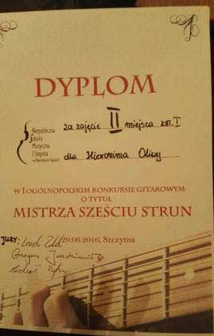
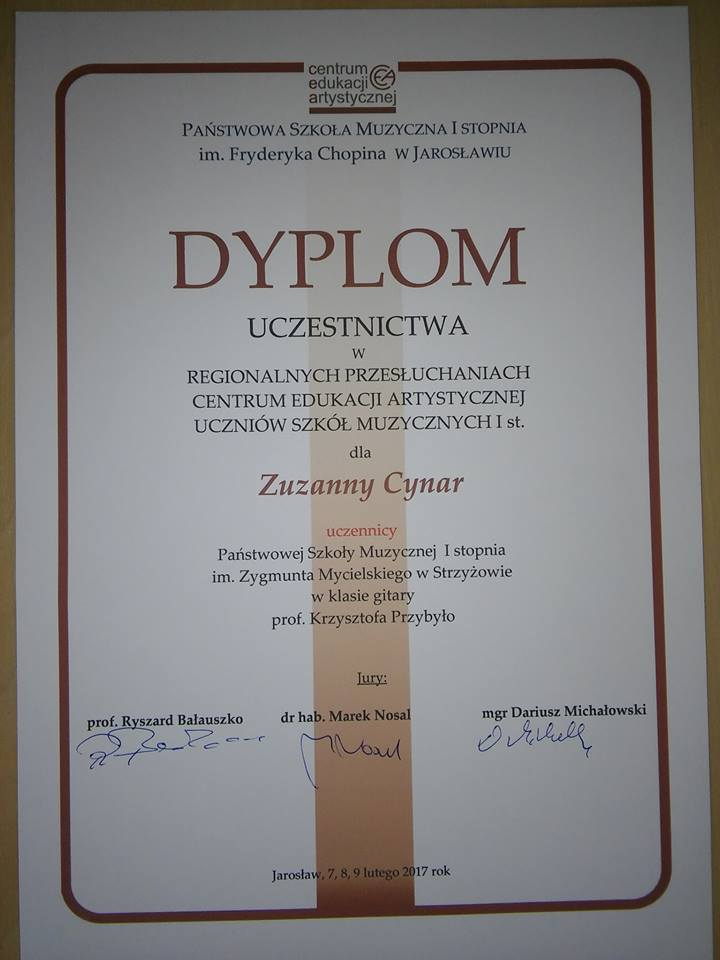

Czy słyszałeś, czy słyszałaś kiedyś kogoś grającego na gitarze? Czy przeszło Ci przez myśl, że też byś tak chciał/chciała umieć? Jeśli tak, mogę Ci w tym skutecznie pomóc! Na gitarze zacząłem grać 21 lat temu, od 12 uczę.
Czytaj więcejCzy słyszałeś, czy słyszałaś kiedyś kogoś grającego na gitarze? Czy przeszło Ci przez myśl, że też byś tak chciał/chciała umieć? Jeśli tak, mogę Ci w tym skutecznie pomóc! Na gitarze zacząłem grać 21 lat temu, od 12 uczę. Uważam, że jak się chce być w czymś naprawdę dobrym, to należy bezustannie się rozwijać. Dlatego ciągle biorę udział w warsztatach i szkoleniach a moi uczniowie zdobywają nagrody na konkursach regionalnych i ogólnopolskich. Uczę na każdym poziomie zaawansowania i osoby w każdym wieku — metryka nie ma znaczenia! Moja najmłodsza uczennica miała 4 lata, mój najstarszy uczeń 56 lat, ale... Podczas kursu gitarowego w Grotnikach — byłem po pierwszym roku studiów — poznałem pana, który drugi rok uczył się grać na gitarze a miał ich 72!!! Zapytałem: dlaczego Pan to robi? — Bo całe życie o tym marzyłem a teraz w końcu mam sposobność...
Jednym z moich ulubionych obszarów pracy jest pokonywanie tremy i zamienianie jej w odwagę sceniczną. Sam kiedyś miałem z tym duży problem. Pewnego dnia po kolejnym nieudanym wystąpieniu powiedziałem sobie: „Dość”. Lata intensywnej pracy doprowadziły mnie do miejsca, w którym skutecznie mogę pomóc uczniowi w rozwiązaniu tego problemu. Największą nagrodą są moi zadowoleni uczniowie po swoich występach:
- — Uczę grać na gitarze klasycznej i akustycznej od podstaw poprzez wszystkie poziomy zaawansowania.
- — Koncentruję się co do wymagań ucznia/rodzica i indywidualnie dobieram plan rozwoju.
- — Pokazuję uczniom (zainteresowanym) jak strach sceniczny (tremę) zamienić w odwagę!
- — Pomagam osobom, które już umieją grać a utknęli na jakimś poziomie. Pracujemy nad rozwiązaniem blokad.
Zależy mi, aby każdy kto wyjdzie z mojej lekcji miał nowe umiejętności bez względu na poziom zaawansowania. Uczę z wykorzystaniem wiedzy psychologicznej, skutecznego planowania, zasad efektywnej nauki, mnemotechnik.
Do każdego ucznia podchodzę indywidualnie. Na lekcjach uczniowie dostają ode mnie wszelkie materiały dydaktyczne. Zależy mi na tym, żeby uczniowie już po krótkim czasie nauki mogli zaprezentować się przed szerszym gronem- czy podczas rodzinnego spotkania, czy na koncercie — z chęcią prezentując swoje umiejętności. Zapraszam do kontaktu.
Osiągnięcia uczniów
Żeby zobaczyć slider ze zaświadczeniami trzeba ustawić komórkę na pozycji portretowej/pionowej


- 

- 

Referencje
Cennik
60zł godzina zegarowa
45zł godzina lekcyjna
pakiet 5 godzin zegarowych 270zł
pakiet 10 godzin zegarowych 480zł
pakiet 5 godzin lekcyjnych 200zł
pakiet 10 godzin lekcyjnych 360zł
Pierwsza lekcja za darmo
Lekcje Skype - cena ustalana indywidualnie
Kontakt
Telefon:
535 589 080
Email:
przybylokrzysztof@gmail.com
Skype:
Krzysztof Przybyło